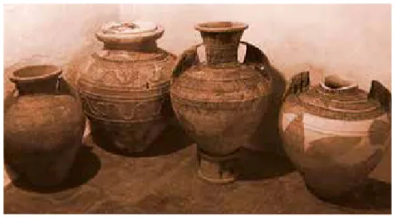

Kapitel 1 · Kurzer Überblick über die Geschichte des Weinbaus in Portugal
Islamisches Erbe und Weinbau
Nach dem Untergang des Römischen und des Westgotenreiches führten die neuen islamischen Herrscher Beschränkungen für den Weinhandel ein, der damals in Frankreich und Deutschland blühte. Die christliche Kirche mit ihrem Bedarf an Messwein, auch außerhalb der Weinbaugebiete, war ein wichtiger Faktor dieser Entwicklung.
Mit den islamischen Eroberern kamen Gesetze, die den Weingenuss bis dahin unbekannten Bedingungen unterwarfen. Die Folgen dieser Beschränkungen sollen hier betrachtet werden. Zunächst ist zu erwähnen, dass sich die Auswirkungen dieser politischen Wellen des islamischen Fundamentalismus in Portugal, das geografisch an deren Rand lag, weniger bemerkbar machten. Mit der islamischen Eroberung im siebten Jahrhundert n. Chr. wurde ein erheblicher Teil der Weinberge im Orient und in Nordafrika zerstört. Wahrscheinlich ging daher ein großer Teil der Sorten und Populationen von Vitis vinifera verloren.
Man muss auch bedenken, dass hier der Genpool von Vitis vinifera orientalis Negr. beheimatet war: Er bestand vor allem aus aromatischen, großbeerigen Sorten, von denen einige sogar kernlos waren. Aufgrund ihrer physiologischen Eigenschaften eigneten sich diese Sorten ideal für das heiße Klima der islamischen Welt (Turković, 1961: 88).
Auf die ersten vier rechtgeleiteten Kalifen (die Schwiegerväter des Propheten Mohammed, Abu Bakr und ʿUmar, dann seine Schwiegersöhne ʿUthman und ʿAli) folgte die erste islamische Dynastie, die Umayyaden, die Damaskus zur Hauptstadt wählten. 132 AH/749 n. Chr. nahmen die Abbasiden dies zum Anlass, die Umayyaden als Kalifen abzusetzen, sie alle – bis auf einen – zu töten und Bagdad zu ihrer Hauptstadt zu machen. Der einzige Überlebende, ein Onkel des letzten Umayyaden-Kalifen Hischam, konnte fliehen und gelangte schließlich nach al-Andalus. Er wurde der erste Emir Abu’l-Mutarrif ʿAbd al-Rahman I.
Die Umayyaden waren tolerant gegenüber Kultur und Sitten der unterworfenen Völker. Peñín (2008: 135) weist darauf hin, dass der Umayyaden-Kalif Abd ar-Rahman III. an seinem Hof Wein zu trinken pflegte und dies auch bei anderen duldete, solange es maßvoll geschah. Ein Hinweis auf Weinberge im südlichen Andalusien ist der Sherry, dessen Name nach dem spanischen Autor Oliver Asín (Peñín 2008: 233) von dem Wort „Sherez“ der arabischen Siedlung Seris abstammt.


Natürlich hörte der Weingenuss selbst im islamischen Andalusien nicht auf, und auch an Exzessen fehlte es nicht. Carvalho (1912: 15) schreibt über den Emir Abu’l-ʿAsi al-Hakam I., der zwischen 206 und 238 AH/822–852 n. Chr. herrschte: „Um sich von den Strapazen des Krieges zu erholen, umging er die Gebote und Verbote des Korans und gab sich verschwenderischen Gastmählern hin, bei denen Dessertweine in Strömen flossen.“ Neben Tafeltrauben und privatem Weingenuss waren auch Rosinen verbreitet (portugiesisch azibebe, ein Wort aus dem Arabischen, azebibe = Rosine); nach Sousa (1830: 8) wurden sie Gästen angeboten oder Menschen mit Appetitlosigkeit gereicht. Zusammen mit der Tafeltraube waren sie fester Bestandteil der islamischen Kultur – ein Umstand, dem der portugiesische Genpool von Vitis vinifera sein Überleben verdankt.
Über den bedeutenden religiösen Führer und Politiker Ahmed Ibn Qasi, Gründer und Statthalter des zeitweiligen Taifa-Reiches von Mértola, gibt es nur wenige Hinweise. Eine interessante Ausnahme, falls sie tatsächlich von ihm stammt, ist ein Quirat aus Mértola mit deutlichem Münzzeichen und einer Weintraube auf der Vorderseite.
Selbst auf den kleinen silbernen Quirats (Münzen) der Almoraviden finden sich Darstellungen von Rosinen und Weintrauben, so etwa bei Ibn Wazir, der ab 540 AH/1146 n. Chr. kurzzeitig König der Taifa von Évora war.
Man kann jedoch nicht übersehen, dass der Weinbau unter der Herrschaft der Almohaden weiter zurückging, ein Trend, der in Portugal weniger ausgeprägt war. Ihr Fundamentalismus war das letzte Bollwerk gegen den religiösen und militärischen Niedergang der iberischen Muslime und der Almoraviden. Die Vorherrschaft der Almohaden von 1147 bis 1269 war jedoch zeitlich begrenzt und begann mit der Schlacht von Las Navas de Tolosa im Juli 1212 zu bröckeln. Mit Hilfe der Kreuzfahrer schritt in dieser Zeit die Rückeroberung Portugals voran.
Letztlich setzte sich diese Tradition über drei Jahrzehnte fort. Marques de Carvalho (1912: 15) erwähnt: „Als Afonso Henriques 1147 Lissabon eroberte, ließ sich schon damals feststellen, dass Wein, Salz und Obst die wichtigsten Erzeugnisse in und um Lissabon waren.“ In der Burg von Silves:
von der ersten Almoraviden-Dynastie bis zur ersten christlichen
Freitage (des muslimischen Feiertags mit Pflicht zum Moscheebesuch) wusste ich nicht, wie weit seine Standhaftigkeit gegenüber dem Weingenuss reichen würde.“
Zusammenfassend lässt sich sagen: Obwohl der Weingenuss den Geboten des Korans widerspricht, wurde der Weinbau in allen Epochen der islamischen Herrschaft betrieben, besonders in Andalusien, aber auch in Portugal. So konnten die alten Rebsorten überleben, während das genetische Spektrum durch die Einführung neuer arabischer Sorten erweitert wurde.